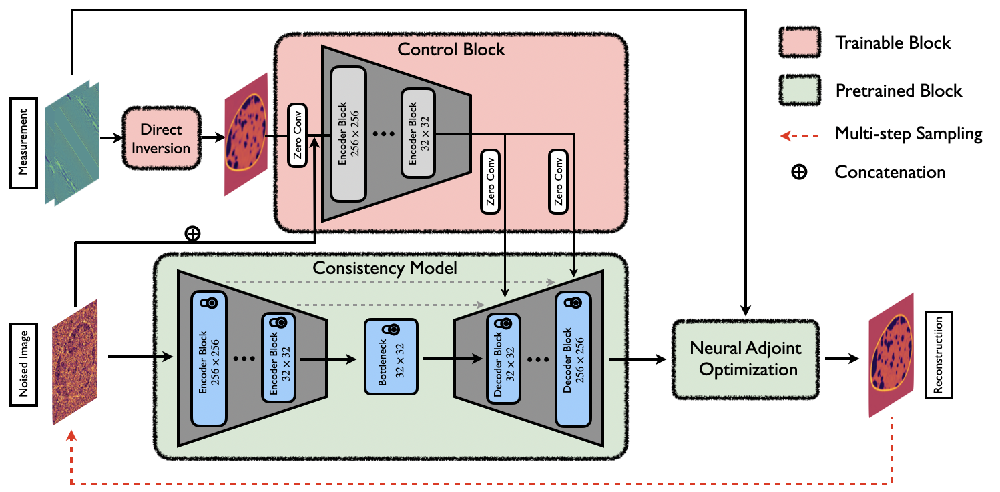
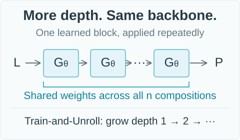
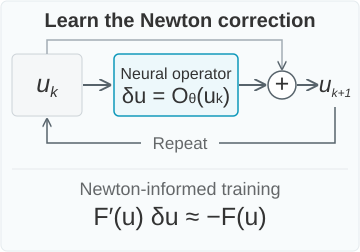
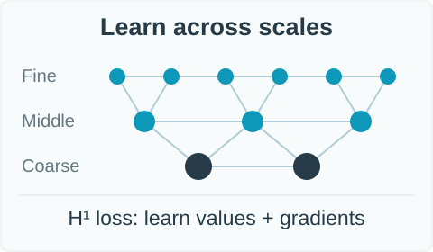
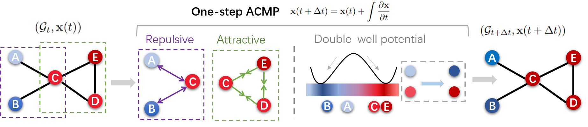
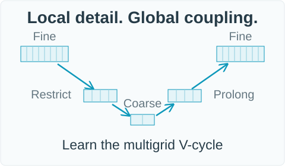
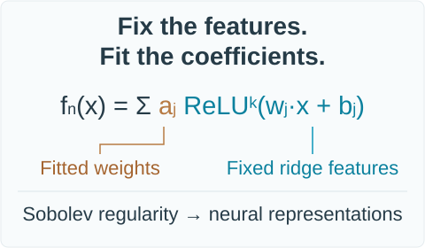

About
I am an Associate Professor at Ocean University of China. My research develops mathematical and computational tools for scientific machine learning, with an emphasis on neural operators, neural-network theory, and efficient solvers for multiscale partial differential equations.
Previously, I was a Postdoctoral Fellow in Computer, Electrical and Mathematical Science and Engineering at King Abdullah University of Science and Technology (KAUST) (2022–2025), working with Prof. Jinchao Xu. I received my Ph.D. in Applied Mathematics from Shanghai Jiao Tong University in 2021 under the supervision of Prof. Lei Zhang, and was a visiting scholar at Caltech with Prof. Houman Owhadi in 2019–2020.
News
- Upcoming: I will be moving to Shenzhen Loop Area Institute (SLAI).
- 2026: Our paper, Born-Series-Inspired Residual Metric for Learned Preconditioners, has been accepted. Congratulations to Juntao Wang, who carried out this project under my supervision!
- 2027: I am serving as an Area Chair for ICLR 2027.
- 2026: I am serving as an Area Chair for ICLR 2026 and NeurIPS 2026.
- September 2025: I joined Ocean University of China as an Associate Professor.
- April–May 2025: I gave an invited talk at the Oberwolfach Workshop on Computational Multiscale Methods. [MFO]
- June 2024: Honored to receive First Prize in the "AI for Science" competition hosted by the DeepModeling community on the Bohrium platform. Our model, MgNO, was a collaborative effort with Juncai He and Bo Xu (SJTU). [Competition Details]
Research Interests
I develop AI-driven numerical methods for scientific computing, especially for multiscale problems and partial differential equations. My work connects approximation theory and numerical analysis with modern machine learning.
- Neural-network theory, kernels, and approximation
- Operator learning and AI for PDEs
- Multiscale, multigrid, and numerical homogenization methods
- Graph learning and scientific machine learning
My work has appeared in Journal of Computational Physics, SIAM Multiscale Modeling & Simulation, Applied and Computational Harmonic Analysis, NeurIPS, ICLR, and LoG.
Research Highlights
Recent projects


Operator learning · Multiscale PDEs
Self-composing neural operators
Build a deeper PDE surrogate by reusing one backbone with shared weights. Train-and-Unroll grows the composition depth during training, without adding new backbone parameters.
Paper

Nonlinear PDEs · AI for science
Newton-informed neural operator
Learn the Newton correction rather than the final solution: predict an update, add it to the current iterate, and repeat. Training uses the linearized PDE equation.
PaperSelected papers


HANO: Mitigating spectral bias
Hierarchical attention connects local detail with long-range interactions. An empirical H1 loss helps learn high-frequency components of multiscale PDE solutions.
Journal of Computational Physics, 2024
Paper

ACMP: Allen–Cahn message passing
Model node features as interacting particles: attraction and repulsion maintain separation, while an Allen–Cahn reaction stabilizes the dynamics. This counters oversmoothing in deep graph networks.
ICLR 2023 · Spotlight
Paper Figure 1

MgNO: Neural operators via multigrid
Parameterize linear operators with a learnable multigrid V-cycle. Fine-grid smoothing and coarse-grid corrections connect local structure with long-range coupling.
ICLR 2024
Paper Code

Sobolev spaces meet linearized ReLU networks
An integral representation connects Sobolev regularity to ReLUk ridge functions. For sufficiently smooth targets and suitably distributed inner parameters, fitting only linear coefficients achieves optimal approximation rates up to logarithmic factors.
Mathematics of Computation · Accepted
PaperPublications
Preprints & Forthcoming Papers
- Optimal Neural Network Approximation via Empirical Least Squares with Deterministic Samples arXiv preprint arXiv:2608.06687, 2026 arXiv:2608.06687
- Divergence-free Linearized Neural Networks: Integral Representation and Optimal Approximation Rates arXiv preprint arXiv:2603.28638, 2026 arXiv:2603.28638
- A Neural Galerkin Least-Squares Nitsche Method with Optimal Convergence Rates for Essential Boundary Value Problems ResearchGate preprint, 2026 Preprint
- Condition Numbers and Eigenvalue Spectra of Shallow Networks on Spheres arXiv preprint arXiv:2511.02625, 2025 arXiv:2511.02625
- Diff-ANO: Towards Fast High-Resolution Ultrasound Computed Tomography via Conditional Consistency Models and Adjoint Neural Operators arXiv preprint arXiv:2507.16344, 2025 arXiv:2507.16344
- OpenBreastUS: Benchmarking Neural Operators for Wave Imaging Using Breast Ultrasound Computed Tomography arXiv preprint arXiv:2507.15035, 2025 arXiv:2507.15035
- Advanced long-term earth system forecasting by learning the small-scale nature arXiv preprint arXiv:2505.19432, 2025 arXiv:2505.19432
- Integral Representations of Sobolev Spaces via ReLUk Activation Function and Optimal Error Estimates for Linearized Networks Accepted for publication in Mathematics of Computation arXiv:2505.00351
Published Papers
- Neural First-Order System Least-Squares Methods for Elliptic Problems with Essential Boundary Conditions Journal of Intelligent Algorithms and Scientific Computing 1 (1), 24–43, 2026 DOI: 10.4208/jiasc.2026-89-1
- Self-composing neural operators for high-frequency and multiscale PDE surrogates Journal of Computational Physics, 2026, 115189 DOI: 10.1016/j.jcp.2026.115189
- A MGNO method for multiphase flow in porous media Annual Meeting Conference, 2024
- Framelet message passing Applied and Computational Harmonic Analysis 78, 101773, 2025 arXiv:2302.14806
- Dilated convolution neural operator for multiscale partial differential equations Journal of Computational and Applied Mathematics 461, 116408, 2025
- Newton informed neural operator for solving nonlinear partial differential equations Advances in Neural Information Processing Systems 37 (NeurIPS), 120832-120860, 2024
- Mitigating spectral bias for the multiscale operator learning Journal of Computational Physics 506, 112944, 2024
- MgNO: Efficient Parameterization of Linear Operators via Multigrid ICLR 2024
- ACMP: Allen-Cahn Message Passing with Attractive and Repulsive Forces for Graph Neural Networks ICLR 2023 (Spotlight)
- Well-conditioned spectral transforms for dynamic graph representation Learning on Graphs Conference, 12: 1-12: 19, 2022
- Iterated numerical homogenization for multiscale elliptic equations with monotone nonlinearity Multiscale Modeling & Simulation 19 (4), 1601-1632, 2021
- Generalized rough polyharmonic splines for multiscale pdes with rough coefficients Numer. Math. Theor. Meth. Appl. 14 (4), 862-892., 2021
- Optimal control for multiscale equations with rough coefficients Journal of Computational Mathematics 41 (5), 842-866, 2021
Appointments & Education
- Ocean University of China, Associate Professor (September 2025–present)
- King Abdullah University of Science and Technology (KAUST), Postdoctoral Fellow, Computer, Electrical and Mathematical Science and Engineering (February 2022–June 2025)
Supervisor: Prof. Jinchao Xu - Shanghai Jiao Tong University, Ph.D. in Applied Mathematics (2017 - 2021)
Advisor: Prof. Lei Zhang - California Institute of Technology (Caltech), Visiting Scholar (2019 - 2020)
Host: Prof. Houman Owhadi - Shanghai Jiao Tong University, Master of Science in Applied Mathematics (2014 - 2017)
- Ningbo University, Bachelor of Science in Mathematics (2008 - 2012)
Service & Recognition
- Area Chair: International Conference on Learning Representations (ICLR), 2026 and 2027; Conference on Neural Information Processing Systems (NeurIPS), 2026.
- Research grants: National Natural Science Foundation of China Young Scientists Fund (PI, 2025–2027); Pearl River Talent Program, Young Top-notch Talent.
- Recognition: First Place, AI4S Cup Competition (2024); ICLR Spotlight Paper (2023).
- Co-organizer: Special Session on Analysis, Algorithms, and Applications of Neural Networks (with Juncai He and Jinchao Xu).
The 14th AIMS Conference on Dynamical Systems, Differential Equations and Applications (AIMS 2024), Abu Dhabi, UAE, December 15-19, 2024. - Co-organizer: Minisymposium on Multigrid and Multilayer Methods (with Juncai He and Jinchao Xu).
International Multigrid Conference (IMG2022), Lugano, Switzerland, August 22-26, 2022.
Contact
Xinliang Liu
Ocean University of China, Qingdao, China
Email: xlliu2017@qq.com